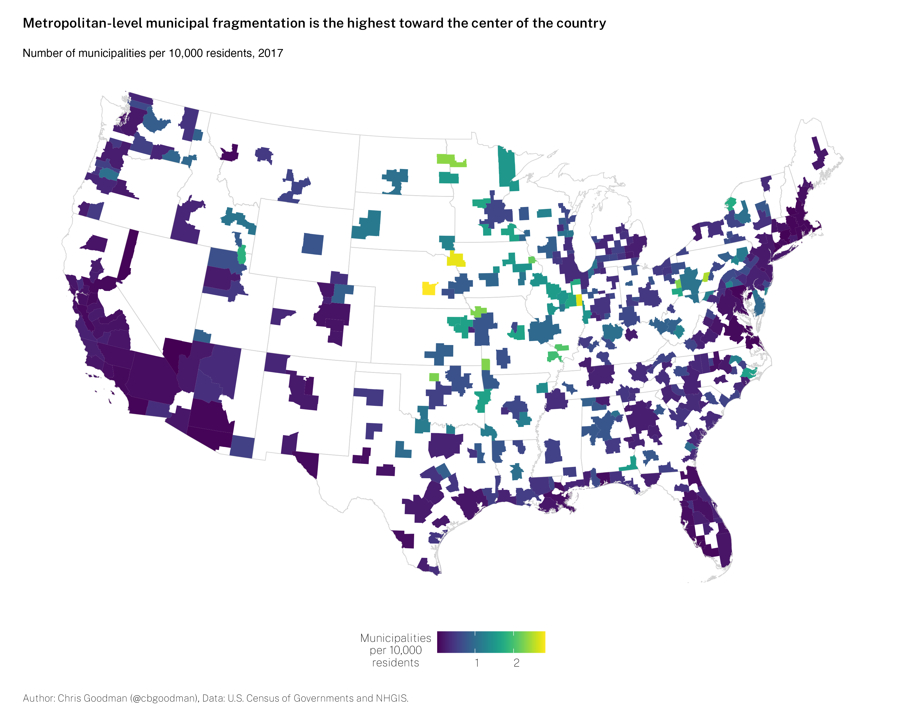
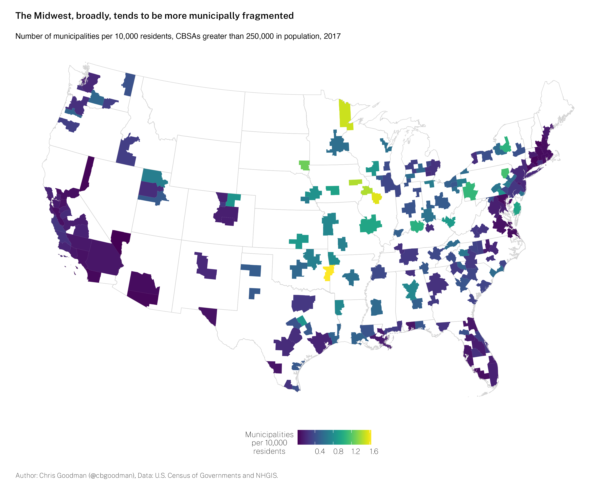
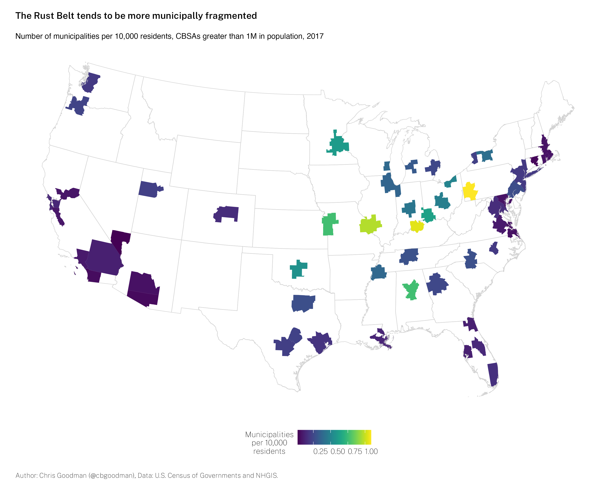

Municipal Fragmentation in U.S. Metro Areas in 3 Maps
Over on Twitter, Dan Immergluck (GSU) asked about what municipal fragmentation in the U.S. at the metropolitan level looked like. I, an expert on local government fragmentation, saw it as my duty to get to the bottom of this. I have the data to do it. It only needs to be reworked slightly.
Ultimately, it matters which CBSAs you include in how the map (and rankings) look. This is obvious but essential. Including the smaller CBSAs (50,000 to 250,000 in population) leads to many of these smaller areas dominating the rankings, largely in the Upper Midwest and Plains.

Limiting the sample of CBSAs to those larger than 250,000 changes things slightly, with the center of gravity moving south and east somewhat.

Lastly, constraining the sample to only those CBSAs larger than 1,000,000 in population gives the prototypical ranking with Pittsburgh and St. Louis at the top of the list. Generally, the most fragmented CBSAs are located in Rust Belt areas.

H/T to Andrew Rumbach (TAMU) for suggesting these maps needed a permanent home (more permanent than Twitter).